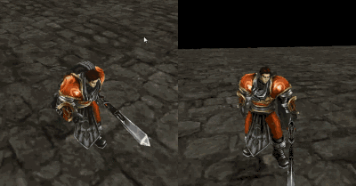
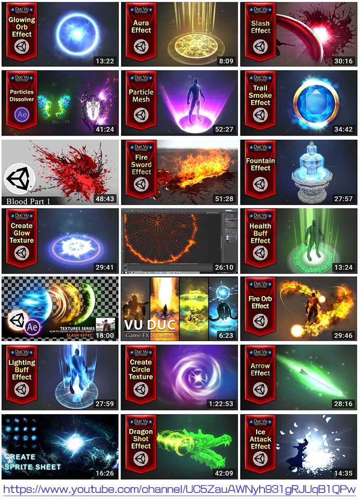
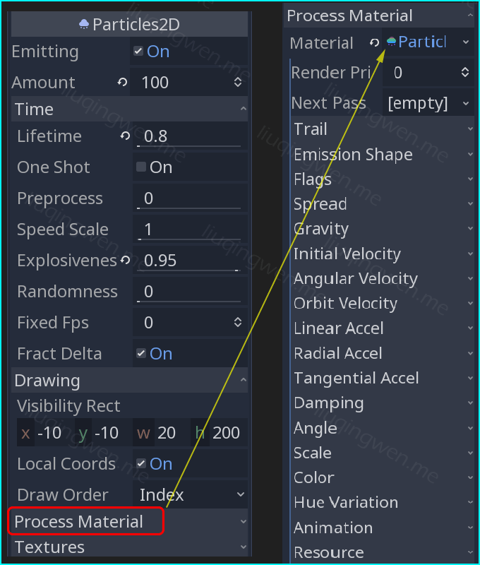
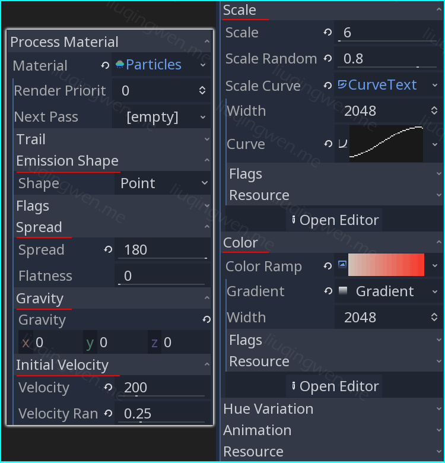
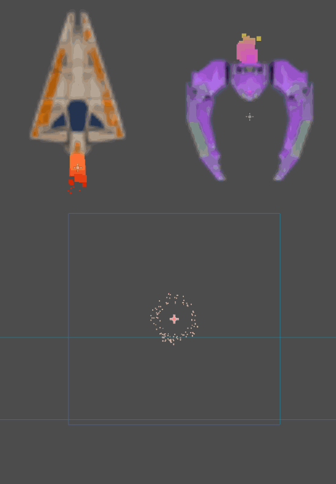

Godot3游戏引擎入门之十一：Godot中的粒子系统与射击游戏（上）

一、前言
第一个收集金币的小游戏结束了，洋洋洒洒写了三篇文章，分别介绍了相关节点、场景以及所有的代码，作为新手能够独立使用 Godot 完成自己的第一个游戏也算是正式入门了！接下来，我们开启第二个完整的小游戏介绍：太空射击小游戏！同样很简单，但是有更多的发挥空间，当然，我只介绍最简单的游戏实现，更多的关卡设计、游戏思路和游戏元素则留给大家去摸索开发吧。

我选择这个游戏的灵感来自于我刚开始学习 Unity 游戏开发时，在官方视频教程中看到的一个游戏： Space Shooter tutorial ，你会发现我在游戏里使用的素材都是来自这个游戏。除此之外，我推荐大家去下载另一个使用 Godot 引擎制作的太空射击类小游戏： Space Rocks ，这个游戏的玩法截然不同，它的原理也更加值得新手去学习，代码中有许多的关于刚体模型物理碰撞的处理。
本节分为上下两篇文章，源码我已经完整地上传到 Github 仓库，欢迎大家克隆并提交 issue ，在开始之前我得申明一下：
- 我使用的 Godot 版本依然是最新的预览版： Godot 3.1 Alpha3
- 这已经是本系列教程的第十一篇，所以会忽略部分细节，有问题请随时留言
- 推荐加入国内 Godot 游戏开发 QQ 交流群： 691534145 （本人非群主）
主要内容：粒子系统的介绍（上篇）
阅读时间： 9 分钟
永久链接： http://liuqingwen.me/2018/12/23/introduction-of-godot-3-part-11-introduce-the-particles-system-and-make-a-shooter-game-part-1/
系列主页： http://liuqingwen.me/introduction-of-godot-series/
二、正文
本篇目标
- 介绍 Godot 中自带的粒子系统
- 了解其他几个常见节点的使用
- 本射击游戏场景介绍和代码（下篇）
粒子系统介绍
中大型游戏中，几乎没有哪个游戏不使用粒子特效的。掌握粒子系统对游戏开发极其重要，合理地使用粒子特效对游戏效果绝对是锦上添花、如虎添翼，常见的粒子特效有：烟花、灰尘、火焰、爆炸、光环、雪花、雨滴、溅射等等等等。比如下面的这张非常熟悉的效果图，使用的就是粒子特效：

想要实现很酷的粒子特效是需要一定的学习和经验积累的，这里推荐大家去油管（ youtube ）上订阅一个名叫 Duc Vu 的泰国人的频道，专做特效视频教程，虽然他大部分教程里使用的是 Unity 粒子，但是思想理论和部分设置都是大体相同的，直达连接： https://www.youtube.com/channel/UC5ZauAWNyh931gRJUqB1QPw

在本射击游戏中，我在四个地方使用了粒子特效，不过这都是一些非常简单的效果，设置起来也很轻松，简单的参数调整即可，接下来我们一起来讨论下这些重要的参数吧！ :smiley:
粒子系统参数
粒子节点 Particles2D 是 Godot 中所有节点里参数最多的一个，这也是为什么同一个材质，打造出的粒子特效千变万化的原因之一。如果想要实现自己心中的效果，我们需要多尝试、多调试、多实践，当然，有几个参数是对结果影响最直接的，请听我一一道来。
首先是粒子节点中最基本的一些参数，大部分参数看名字就知道其意义，如下表格：
| 参数 | 解释 | 说明 |
|---|---|---|
| Emitting | 是否发射粒子 | 如果 One Shot 勾选， Emitting 将会被取消勾选 |
| Amount ⭐⭐ | 发射粒子的总数量 | 粒子消亡将重新产生新粒子，配合 Lifetime 生命周期参数 |
| Lifetime ⭐⭐ | 粒子的生命周期 | 通过计算，每隔 Lifetime/Amount 的时间产生一颗新粒子 |
| One Shot | 只发射一次 | 非常适用于爆炸等特效，在代码中控制发射 |
| Preprocess | 预热，提前发射粒子 | 比如游戏中的下雪场景，也叫 Pre-warm |
| Speed Scale | 速度缩放系数 | 整体效果，影响粒子材质中的 Velocity 速度参数 |
| Explosiveness | 爆炸系数 | 粒子从中间往四周扩散，爆炸特效必备 |
| Randomness | 随机系数 | 粒子产生的随机性，取值 1 为完全随机 |
| Local Coords ⭐ | 是否为本地坐标 | 位于 Drawing 子菜单，粒子运动在本地坐标还是世界坐标 |
这些是 Particles2D 节点的主要参数，控制粒子的一些整体效果，当然，仅仅依靠这些参数是不行的，当我们在使用粒子节点的时候，必须要给粒子节点添加一个 Material 材质，否则你不会看到有任何效果发生，在 Process Material 菜单下，材质分为两种： ShaderMaterial 和 ParticlesMaterial 。

这里我们选择给粒子节点创建一个新的 ParticlesMaterial 粒子材质，在粒子材质中又有更丰富的参数配置，通过调节这些参数达到我们想要的效果，主要参数如下表：
| 参数 | 解释 | 说明 |
|---|---|---|
| Emission Shape | 发射体的形状 | 有点、球体、方体、多点等形状 |
| Spread ⭐ | 粒子产生的范围 | 最大值为 180 度乘以 2 倍，即全范围发射： -180°~180° |
| Gravity | 重力加速度 | 设置为 0 粒子将不受重力控制 |
| Initial Velocity ⭐ | 粒子发射初始速度 | 与生命周期 Lifetime 参数结合产生特效 |
| Angular Velocity | 粒子的角速度 | 类似 Initial Velocity |
| Linear Accel | 粒子的加速度 | 与 Initial Velocity 参数配合 |
| Radial Accel | 粒子旋转加速度 | 与 Angular Velocity 参数配合 |
| Damping | 阻尼系数 | 类似遇到逆风、摩擦阻力的效果 |
| Angle | 粒子角度 | 粒子的旋转角度，非发射方向 |
| Scale ⭐ | 粒子缩放尺寸 | 可以设置随机，随时间变化而调整粒子的缩 |
| Color ⭐ | 粒子的颜色 | 可以设置渐变颜色，粒子颜色随时间而变化 |
粒子材质的这些参数非常好理解，其中比较重要的参数我已经标记了，大家可以自己尝试不同参数值对效果的影响。

一般来说，我们在使用粒子系统制作理想效果的时候，还会经常遇到随机参数以及曲线设置。粒子系统中很多参数设置都有曲线功能，比如 Scale 缩放参数，我们可以给它设置一个 Scale Curve 曲线，在曲线上通过添加、删除、移动锚固点来调整曲线的样式，最终粒子的大小缩放也就会随时间顺应曲线而变化。
如果你熟悉 Unity 粒子，你会发现 Unity 粒子的曲线功能调整更加方便，这里顺便赞一下 Unity 2018.3 新版本的一些新功能、新特性、新改进，互相学习很重要嘛。 :grin:
除此之外，真正的特效一般都会使用到各种各样的图片作为粒子材质纹理， Godot 中粒子节点还支持使用 SpriteSheet 精灵图集、动画材质、地图材质等，位于 Textures 纹理菜单下，本游戏并没有使用到，大家可以去研究研究。
简单粒子效果
我在射击游戏中实现的粒子特效都极其简单，也没有使用任何其他的图片作为粒子的材质纹理：

注意这三个效果中的爆炸效果需要 Explosiveness 参数的配合，相信大家都能做出以上简单的粒子特效。总之，对于粒子特效的应用就是对粒子属性的熟悉度，我给新手朋友们的建议是：尽量使用最少的参数配置出近视的效果，当效果接近理想目标后，再进行其他参数的调整。还有提醒大家的是： Godot 中的 2D 粒子完全可以使用在 3D 游戏中！骚年们，充分发挥自己的创意，尽情打造酷炫的效果吧！ :sunglasses:
其他几个节点
游戏中除了 Particles2D 节点，我还使用了其他三个新的节点： VisibilityNotifier2D/ParallaxBackground/TextureButton ，这里我也简单地说明一下：
- VisibilityNotifier2D 用于控制节点进出视窗、屏幕通知，比如用于物体飞出屏幕就删除等
- TextureButton 一个按钮控件，和普通按钮不同的是，它可以设置按钮在鼠标的各种状态下的图片显示
- ParallaxBackground 节点配合 ParallaxLayer 实现滚动特效，主要属性参数为 Scroll 和 Scale 等
说明：游戏中我就是使用 ParallaxBackground 节点实现的无限太空背景滚动效果，它需要一个或者多个子节点 ParallaxLayer 的配合，其原理就是通过各个 ParallaxLayer 层不同的滚动速度来实现背景远近的视觉效应，效果类似如下平台游戏：

三、总结（上）
好了，上篇就介绍这些内容吧，下篇主要内容是代码的重点解析。总结一下本篇主要知识点：
- Godot 中自带粒子系统的相关参数说明
- 游戏中应用到的其他几个有用的节点
本篇的 Demo 以及所有代码已经上传到 Github ，地址： https://github.com/spkingr/Godot-Demos
未完待续……！